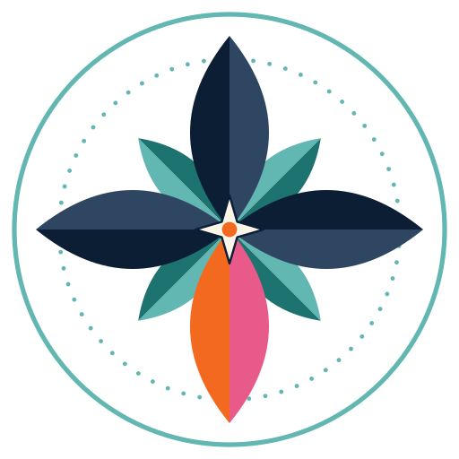

Apresentação
O Atlas Austral é um repositório de produções cartográficas e de dados desenvolvido por Bianca Glória França de Oliveira Chagas. Reúne mapas temáticos, painéis interativos, bases de dados e projetos em QGIS elaborados principalmente no âmbito da pesquisa acadêmica. Trabalhos profissionais podem integrar o acervo quando houver a devida autorização.
Cada produção é apresentada com ficha técnica, fontes, método e licença e, quando aplicável, com referência para citação, de modo a funcionar ao mesmo tempo como portfólio, acervo consultável e ponte para as publicações associadas.
Princípios
Método
Cada produção informa, na sua ficha técnica, as fontes utilizadas (bases públicas e oficiais, dados cedidos por parceiros ou levantamentos próprios), o tratamento aplicado aos dados, o sistema de referência e as ferramentas empregadas.
Os produtos são versionados no GitHub e, quando publicados, podem ser depositados no Zenodo com DOI. Produções vinculadas a manuscritos em avaliação permanecem reservadas até o resultado, para preservar a avaliação às cegas.
O nome e o símbolo
- Atlas
- Coleção sistemática de mapas. O termo identifica o caráter do projeto: um conjunto organizado de produções cartográficas.
- Austral
- Do latim australis, “do sul”, derivado de auster, o vento sul. Expressa a perspectiva do Sul Global adotada no projeto, sem restringir o recorte territorial das produções.
- O símbolo
- Rosa-dos-ventos de oito pontas que se abre como uma flor. A ponta sul, em laranja e rosa, marca o ponto de partida do olhar; os anéis remetem às curvas de nível e à linha d’água.

Como citar e licenças
Quando aplicável, cada produto apresenta a referência pronta nos formatos ABNT (NBR 6023), APA e ISO 690. Mapas e dados derivados são distribuídos sob a licença Creative Commons Atribuição-NãoComercial 4.0 (CC BY-NC 4.0); o código do site, sob a licença MIT. Dados de terceiros mantêm as licenças de origem. Usos comerciais dependem de autorização prévia.
Fontes de dados e créditos de imagem
As fontes de cada produção estão listadas na respectiva ficha técnica, com os créditos exigidos por cada licença, por exemplo, “© colaboradores do OpenStreetMap” para dados do OpenStreetMap.
A silhueta do Farol da Barra na abertura do site foi traçada a partir de foto de Romerito Pontes, disponível no Wikimedia Commons sob a licença CC BY 2.0.
.jpg){kind=link}
Os contornos do mapa da página inicial vêm do Natural Earth, base cartográfica de domínio público.
Por que “em breve”?
Alguns mapas do Atlas fazem parte de trabalhos submetidos a eventos e periódicos científicos que adotam avaliação às cegas, em que os avaliadores não devem conhecer a autoria. Para preservar esse processo, esses mapas aparecem apenas com um tema e uma região gerais. Título, conteúdo e publicação associada são divulgados depois do resultado da avaliação.
Acessibilidade e privacidade
O site segue as diretrizes de acessibilidade para conteúdo web: navegação por teclado, texto alternativo em todos os mapas, contraste mínimo de 4,5:1 e um menu com ajustes de leitura. Não utiliza cookies nem ferramentas de rastreamento; as preferências de acessibilidade ficam armazenadas apenas no navegador de quem visita.